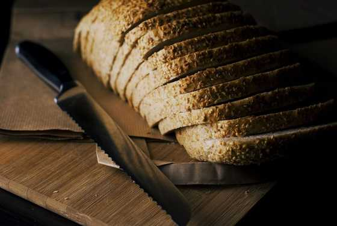
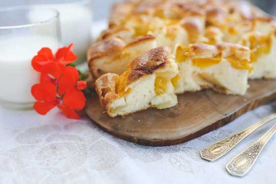
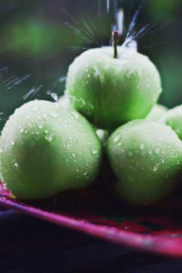

MENU
メニュー
メニューと価格は準備中です。確認でき次第、掲載します。
| メニュー | 準備中 |
|---|---|
| 価格 | 準備中 |
| ご予約 | 準備中 |
紹介記事では、朝ごはん・日替わりランチ・ティータイム(デザートや手作りお菓子)の時間帯に分けて紹介されています。詳しい内容や価格は、お店から確認でき次第掲載します。
朝のイメージ
朝ごはんから、ティータイムまで。
下の写真は雰囲気を伝えるフリー素材で、お店のメニューではありません。



甘いもののイメージ
お店のメニューではなく、ティータイムの雰囲気を伝えるための写真です。